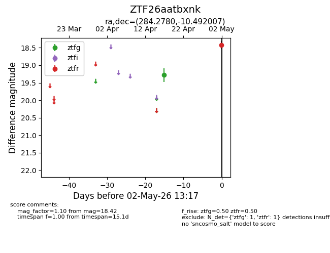
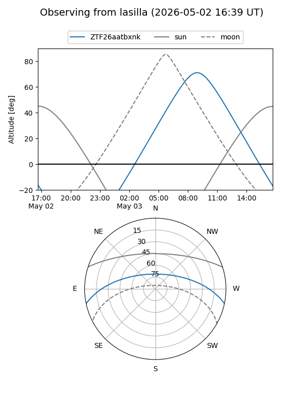
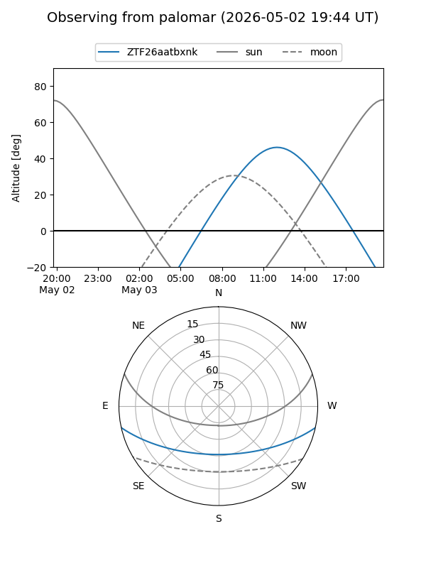

ZTF26aatbxnk
Target ZTF26aatbxnk at 2026-05-02 13:28
Aliases and brokers:
FINK: link
Lasair: link
ALeRCE: link
alt names
ZTF26aatbxnk (ztf,fink_ztf)
Coordinates:
equatorial (ra, dec) = 284.2780,-10.49201
equatorial (HMS+DMS) = 18:57:06.73,-10:29:31.22
galactic (l, b) = (24.2007,-6.00977)
Flags:
Photometry:
last ztfg=19.28, ztfr=18.42
1 ztfg, 1 ztfr detections
Lightcurve

Visibility


Additional plots